Dremio Load
Load data from 25+ sources into Dremio Iceberg tables — with a built-in UI for managing jobs, monitoring pipelines, and scheduling runs.
What is Dremio Load?
A self-contained batch data ingestion tool with a full web UI
Dremio Load reads data from databases, cloud storage, SaaS tools, and ad platforms — then writes it into Dremio as Apache Iceberg tables. Everything runs in a single Docker container with a browser-based interface at http://localhost:7071.
25+ Connectors
Postgres, MySQL, S3, Snowflake, Google Ads, Salesforce, MongoDB, and more.
Incremental Load
Cursor-based incremental pulls. Only new or changed rows on each run.
Two Write Modes
Mode A: Dremio SQL MERGE. Mode B: PyIceberg direct write for high throughput.
Pipeline Visibility
Visual source → job → target flow with run history, success rates, and row counts.
Secure by Default
Env vars, HashiCorp Vault, and masked credentials throughout the UI.
AI Agent
Optional Claude-powered agent for managing pipelines with natural language.
Installation
One Docker command — no Python or Node.js required on your machine
mshainman/dremio-load:latest —
available at hub.docker.com/r/mshainman/dremio-load
Pull the image:
docker pull mshainman/dremio-load:latestCreate a persistent volume for jobs and config:
docker volume create dremio-load-dataSeed the required config file:
docker run --rm -v dremio-load-data:/data busybox sh -c "echo 'jobs: []\ntarget: {}' > /data/config.yml"Start the container:
docker run -d --name dremio-load -p 7071:7071 -v dremio-load-data:/data mshainman/dremio-load:latestOpen http://localhost:7071 in your browser.
dremio-load-data volume. Upgrade by pulling the new image and recreating the container — your data stays intact.
Configure Target (Dremio)
Set up where data will be written before creating any jobs
Click Target in the sidebar. There are two write modes — pick the one that matches your Dremio setup.
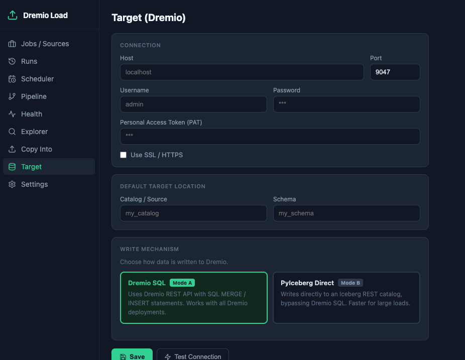
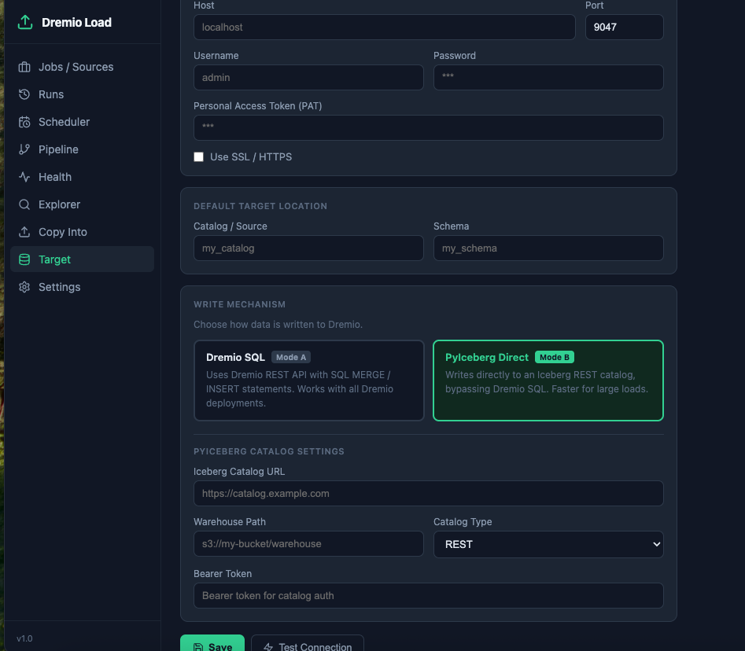
Enter your Dremio Host and Port (default: 9047).
Enter Username / Password — or a Personal Access Token (PAT) for Dremio Cloud.
Set the Catalog / Source and Schema where tables will be created.
Choose Mode A (Dremio SQL) or Mode B (PyIceberg Direct).
Click Test Connection, then Save.
localhost — as the host. Containers can't reach each other via localhost.
Create a Load Job
Define a source, its tables, and where to write the data
Click Jobs / Sources in the sidebar, then click + New Job in the top right.
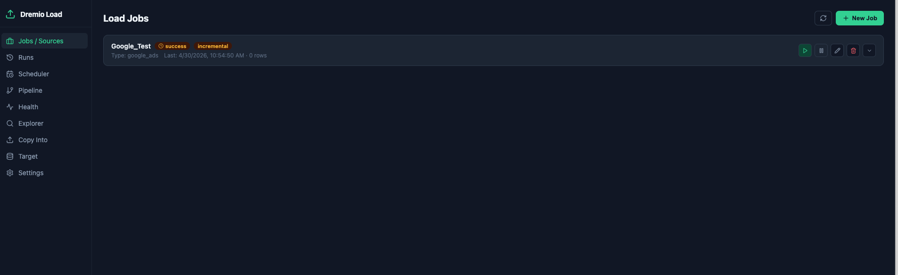
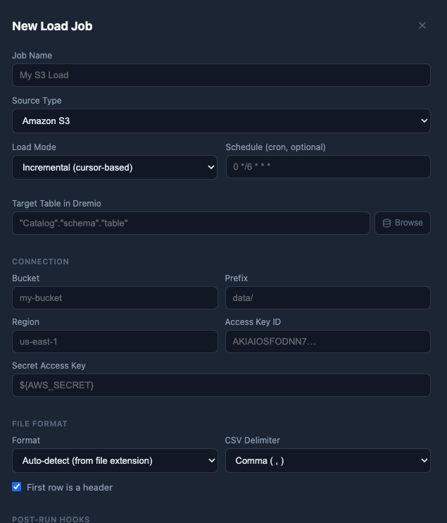
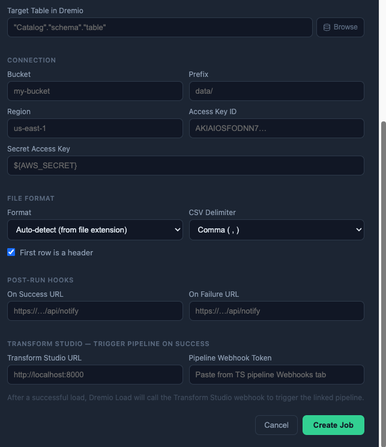
Key fields
| Field | Description |
|---|---|
| Job Name | Friendly name shown on the job card and in run history |
| Source Type | The connector to use — see the full list in the next section |
| Load Mode | Incremental: only new/changed rows · Full: replace all data each run |
| Schedule | Cron expression (e.g. 0 6 * * * for daily at 6am), or leave blank for manual-only |
| Target Table | The Dremio/Iceberg table to write to (e.g. "Catalog"."schema"."table"). Use Browse to pick from the catalog. |
| Tables / Collections | Comma-separated list of tables, views, or file prefixes to load |
Source Types
25+ connectors across every major data category
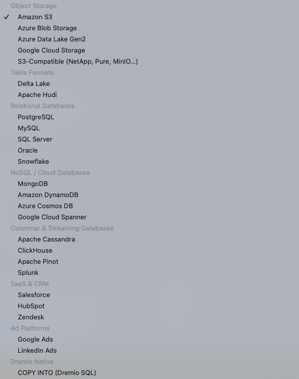
Object Storage
Amazon S3 · Azure Blob / ADLS · Google Cloud Storage · S3-Compatible (MinIO, NetApp…)
Table Formats
Delta Lake · Apache Hudi
Relational Databases
PostgreSQL · MySQL · SQL Server · Oracle · Snowflake
NoSQL / Cloud DB
MongoDB · Amazon DynamoDB · Azure Cosmos DB · Google Cloud Spanner
Columnar & Streaming
Apache Cassandra · ClickHouse · Apache Pinot · Splunk
SaaS & CRM
Salesforce · HubSpot · Zendesk
Ad Platforms
Google Ads · LinkedIn Ads
Dremio Native
COPY INTO (Dremio SQL) — reads files already in a Dremio-registered source
Google Ads — OAuth Setup
One-click OAuth flow — no manual token generation required
Google Ads requires OAuth 2.0 credentials. Dremio Load includes a built-in Connect with Google popup flow that handles the OAuth handshake and automatically fills in the refresh token — no command-line tools or copy-pasting needed.
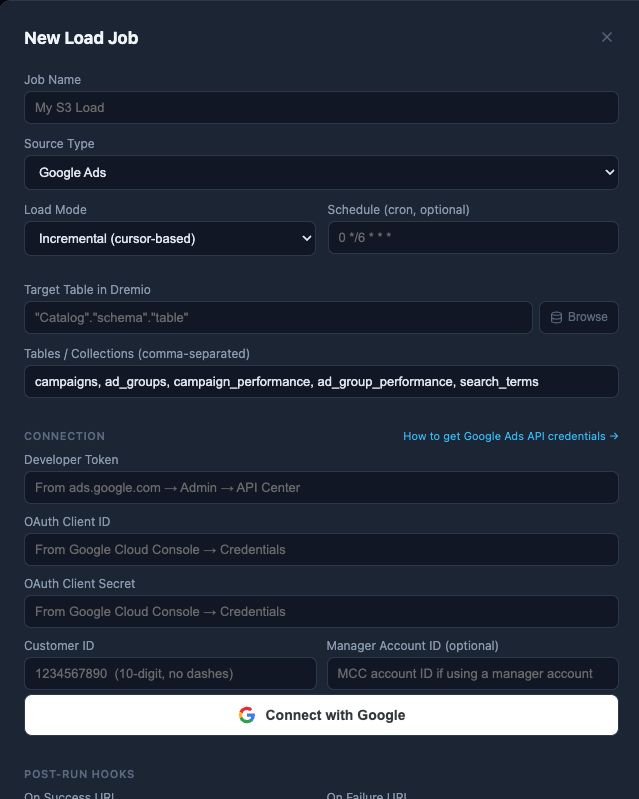
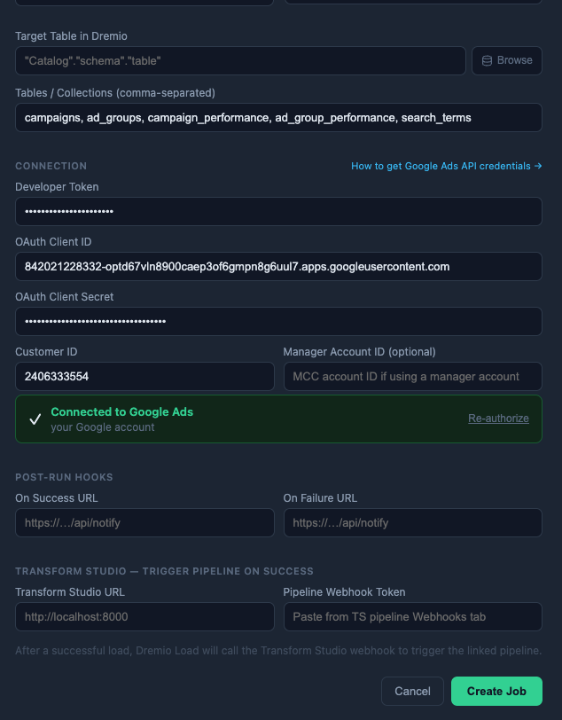
Step-by-step
In Google Cloud Console, create an OAuth 2.0 Client ID of type Desktop app. Copy the Client ID and Client Secret.
Get a Developer Token from Google Ads → Tools → API Center. Apply for Basic Access for production use (Test tokens only work against test accounts).
In Dremio Load, create a new job with source type Google Ads. Fill in the Developer Token, Client ID, Client Secret, and Customer ID (digits only, no dashes).
Click Connect with Google. A browser popup opens — sign in with your Google account and grant access.
The popup closes automatically and the form shows the green Connected badge. Click Create Job.
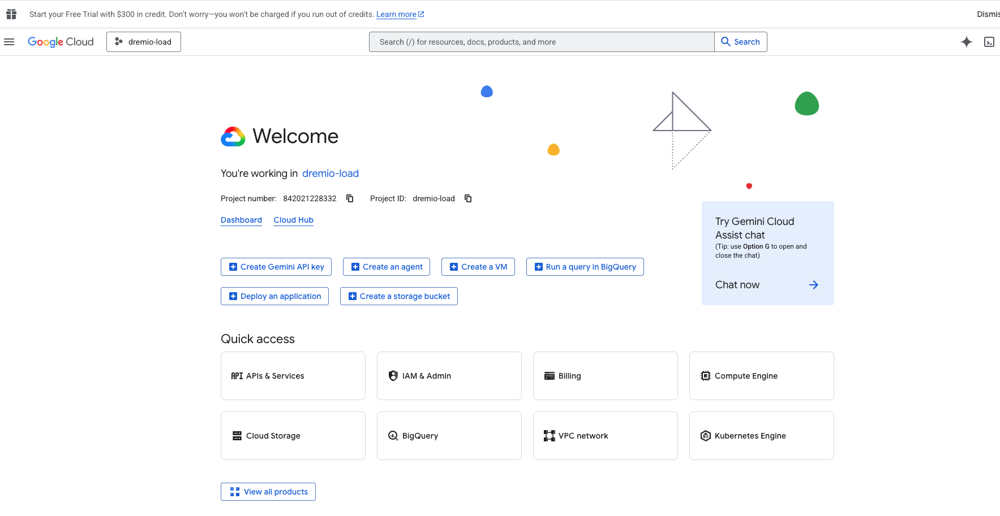
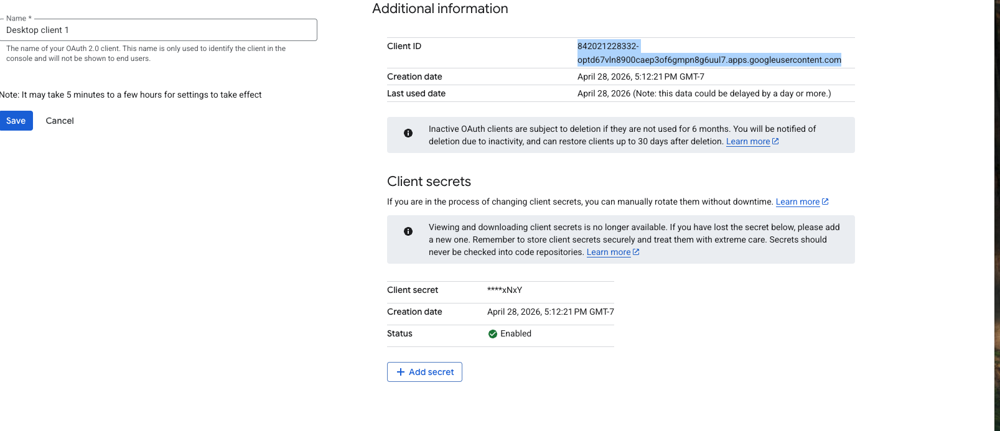
Available Google Ads tables
Running Jobs
Trigger manually or let the scheduler handle it
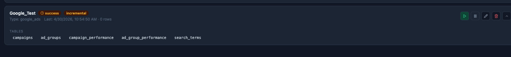
Action buttons explained
| Button | Action |
|---|---|
| ▶ Play (green) | Trigger the job immediately, regardless of schedule |
| ⏸ Pause | Toggle enable/disable. Disabled jobs are skipped by the scheduler but can still be run manually |
| ✏ Pencil | Open the job form to edit any setting — name, connection, tables, schedule, target |
| 🗑 Trash | Delete the job (requires confirmation). Data already in Dremio is not affected |
| ∨ Chevron | Expand the card to see the full list of tables configured for this job |
updated_at) is newer than the last run value are fetched. The cursor is stored in SQLite automatically. To force a full reload, use the reset icon in the Runs page.
Run History
Every table load logged — status, rows, duration, and errors
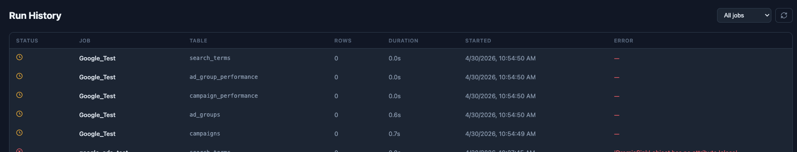
| Column | Description |
|---|---|
| Status | ✓ success (green) · ✗ error (red) · ⏱ pending (amber) |
| Job | The job name that ran this table |
| Table | The specific source table loaded in this run |
| Rows | Number of rows written to Dremio in this run |
| Duration | Elapsed time for this table's load |
| Started | Timestamp the run began |
| Error | Full error message if the run failed — useful for diagnosing connection or query issues |
Scheduler
See all jobs and trigger them on demand
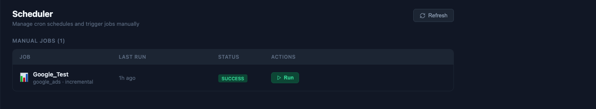
Cron schedule examples
| Expression | Meaning |
|---|---|
0 * * * * | Every hour at :00 |
0 6 * * * | Daily at 6:00 AM |
0 */4 * * * | Every 4 hours |
30 5 * * 1 | Every Monday at 5:30 AM |
0 0 1 * * | First day of each month at midnight |
Pipeline View
End-to-end visualization: source → job → target
Click Pipeline in the sidebar for a visual overview of every configured pipeline. Each card shows the full flow for one job — click any card to drill into the detail view.
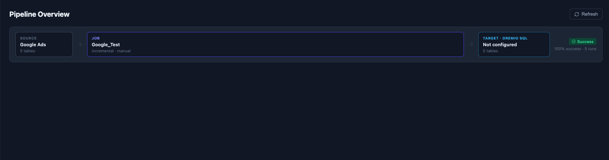

Pipeline Detail Page
Clicking a pipeline card opens the full detail view for that job, showing:
- Source panel — connection summary, per-table row counts and last-run status icons
- Job panel — mode/schedule chips, success rate bar, run history dots (hover for details), last run summary
- Target panel — Dremio host, destination table, live Preview Target Data button
- Per-table run history — the last 30 individual table loads with rows, duration, and error messages
Health Dashboard
At-a-glance status for all jobs
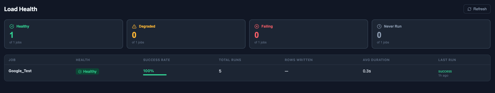
| Status | Meaning |
|---|---|
| Healthy | Last run succeeded |
| Degraded | Some recent runs failed — success rate below 100% |
| Failing | Last run failed |
| Never Run | Job exists but has never been triggered |
Explorer
Browse your Dremio catalog and source data without leaving the UI
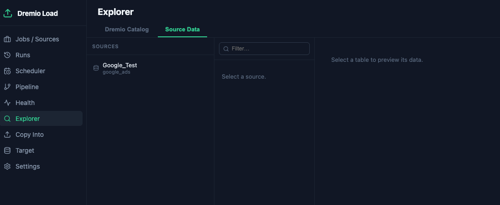
Copy Into
Dremio-native file ingestion — let Dremio do the reading
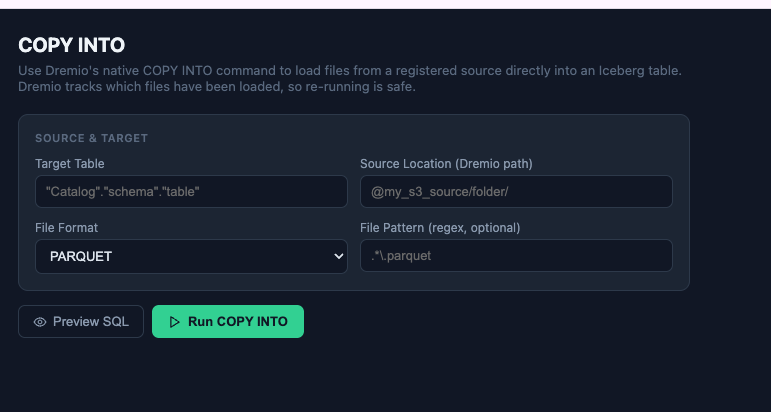
@my_s3_source/folder/), file format (Parquet, JSON, CSV), and optional filename pattern regex. Click Preview SQL to see the generated statement before running.Use COPY INTO when your files are already registered in Dremio as a source (S3, GCS, ADLS). Dremio reads the files natively — no Python parsing involved. Dremio tracks which files have already been loaded, so re-running is safe.
Settings
Notifications, secrets management, and AI Agent configuration
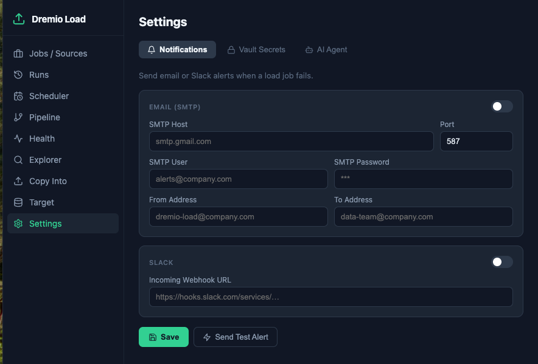
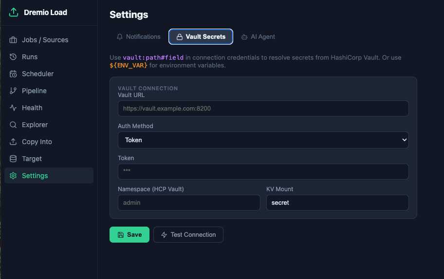
vault:path#field syntax in any connection credential. Environment variables use ${VAR_NAME} syntax and need no additional setup.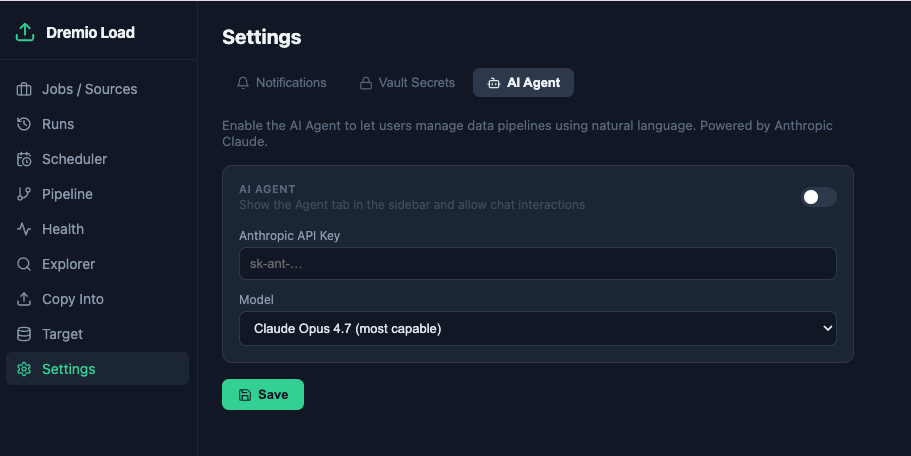
${ENV_VAR} for environment variables passed into the container, or vault:secret/path#key for Vault-managed secrets. Both are resolved at runtime and never stored in plain text.